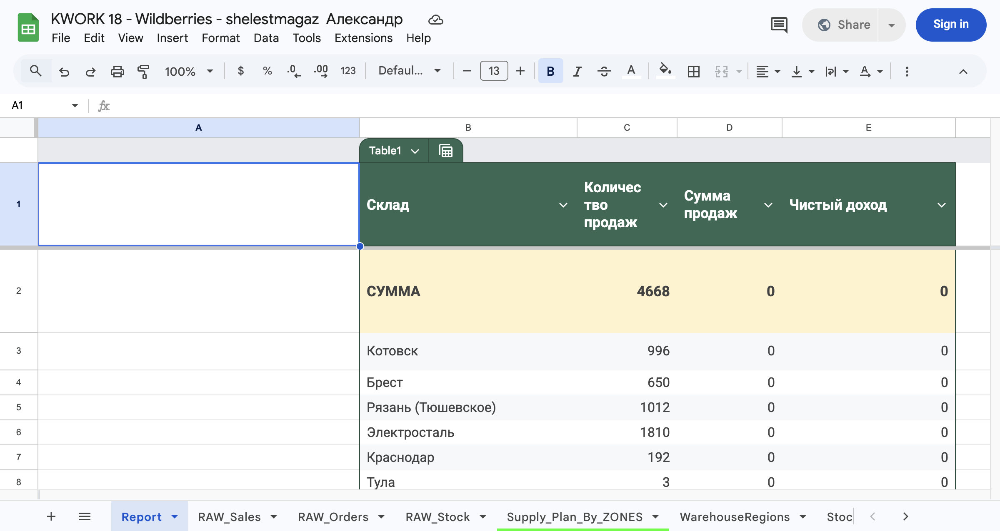
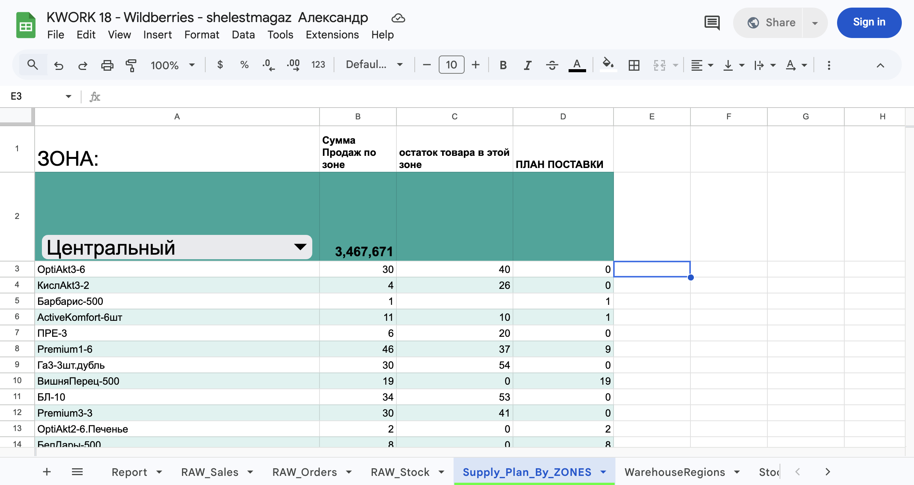
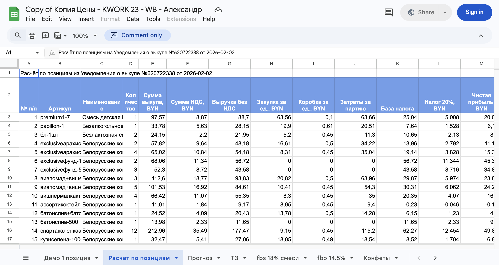
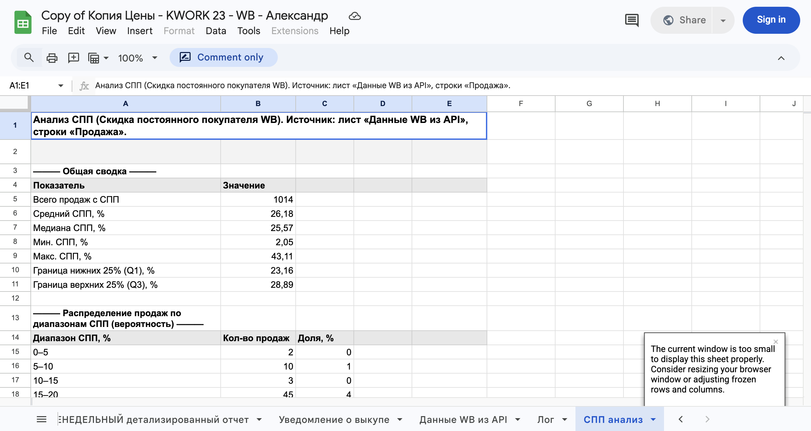
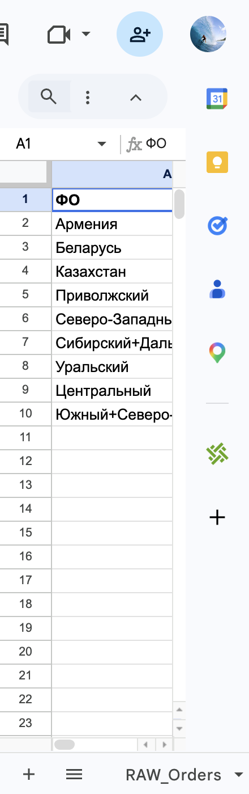
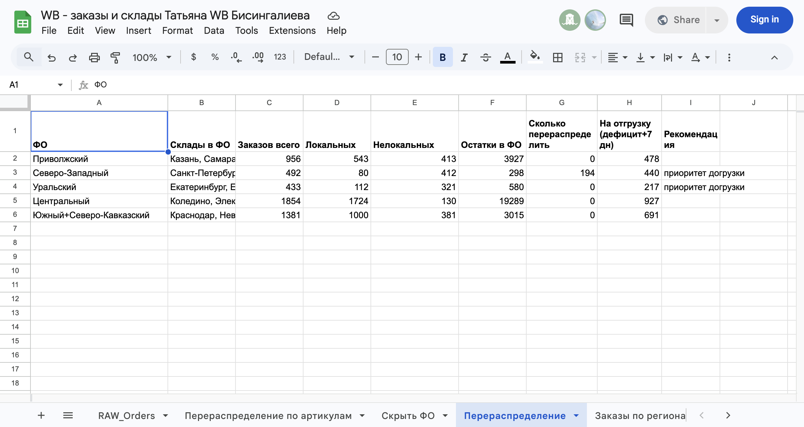

Таблица для WB: выгрузка из API Wildberries и план поставок по складам
Кейс: таблица для селлера WB — автоматизация выгрузки продаж, заказов и остатков по складам, план поставок по зонам, перераспределение по складам, экономика по артикулам.
Задача
Селлеру на Wildberries нужна была таблица для WB с автоматизацией:
- выгрузка из API WB — продажи, заказы, остатки по складам без ручной выгрузки
- заказы по складам и регионы — с каких складов куда уходит товар
- план поставок по складам на основе реальных продаж
- остатки по складам WB в одной таблице
- управление ценами по расписанию через API
- расчёт экономики продаж по артикулам (ROI, маржа)
Без таблицы для Wildberries данные разбросаны по отчётам ЛК, выгрузка из WB вручную занимает часы, план поставок по складам считают в Excel. Сделана таблица для селлера на Google Sheets с подключением к API Wildberries.
Выгрузка из API Wildberries в таблицу
Таблица для WB подключается к API Wildberries и автоматически загружает:
- данные о продажах
- данные о заказах
- остатки по складам
- данные по ценам
В интерфейс добавлена панель с кнопками: «Wildberries – загрузка продаж» (лист RAW_SALES за 7/14/21/30 дней) и «Wildberries – загрузка остатков» (лист RAW_STOCK по всем складам).
Листы системы
- RAW_SALES — исходные данные продаж
- RAW_STOCK — остатки по складам
- WB_ORDERS — данные заказов
- SALES_BY_SKU_ZONE — продажи по артикулам и регионам
- SUPPLY_PLAN_BY_ZONES — расчёт плана поставок
Сырые данные хранятся отдельно, аналитические таблицы строятся без риска повредить загрузку.
Аналитика по складам и регионам
Для каждого артикула определяется: с какого склада отправлен, в какой регион заказ, сколько продано. Таблица SALES_BY_SKU_ZONE показывает артикул, склад отправки, регион заказа, количество продаж.
Регионы объединяются в зоны: Центральная, Южная, Кавказ, Сибирь, Казахстан, Центральная Азия. Новые регионы WB автоматически появляются в таблице и могут быть вручную отнесены к зоне.
Автоматический расчёт плана поставок
На листе SUPPLY_PLAN_BY_ZONES: выбирается период (например 21 день), система считает продажи по регионам, агрегирует по зонам, рассчитывает прогноз потребления и формирует план поставок (например Краснодар — 15 ед., Котовск — 13 ед.).
Управление ценами
Через API WB: автоматическое изменение цен по расписанию, подъём или снижение на заданный процент, откат через заданное время. Пример: повышение на 30% в 00:00, возврат к исходной цене в 03:00.
Скрипты пакетной загрузки (WB допускает не более 200 товаров за запрос — система разбивает список на части и загружает последовательно).
Автоматические триггеры
Триггеры Google Apps Script запускают по расписанию: обновление продаж и остатков, изменение цен, откат цен, обновление аналитики.
Отчёты и план поставок
Лист Report — свод по продажам, заказам, остаткам. Лист Supply_Plan_By_ZONES — план поставок по зонам. Данные подтягиваются из API WB, расчёт экономики (прибыль, ROI, НДС) по позициям также входит в систему.


Результат
Полноценная система управления данными WB для селлера:
- автоматическое получение данных из API
- аналитика продаж по складам и регионам
- прогноз поставок
- управление ценами по расписанию
- расчёт экономики продаж и моделирование прибыли
Всё работает в Google Sheets, без сложного ПО. Система адаптируется под любой аккаунт WB и масштабируется с ростом бизнеса.
Кейс: WB-таблица (два заказа)
С этого проекта по сути началась автоматизация WB в Google Sheets. Два заказа: сделана таблица с загрузкой продаж, заказов и остатков из API WB, зоны и регионы (WarehouseRegions), план поставок по зонам (Supply_Plan_By_ZONES), управление ценами по расписанию и расчёт экономики (прибыль, ROI, НДС, комиссия, СПП). Всё то, что описано выше в разделе «Что было реализовано», впервые собрано и работает в этой таблице.
Кейс: таблица экономики WB — реальные ROI, НДС, СПП (февраль–март 2026)
Повторный заказ от того же клиента (WB, Беларусь, BYN). В старой таблице ROI по позициям считался упрощённо — в кабинете WB экономика другая: закупка без НДС, а реализация идёт с учётом скидки постоянного покупателя (СПП). WB продаёт дешевле, комиссия считается от СПП по формуле оферты п.12 (кВВ = Х + Y − скидка WB). В итоге таблица показывала, например, 19% ROI, а по факту при правильном учёте выходило около 40%.
Что нужно было клиенту:
- Реальная себестоимость и цена по каждому артикулу — сколько ставить в карточке, какая получится прибыль и ROI.
- НДС: входящий (при закупке), исходящий (при продаже — от цены реализации P, по которой WB фактически продал), минусовой НДС с вознаграждения WB (колонка AG в детализированном отчёте) и НДС к уплате в бюджет. Раньше НДС считали от полной стоимости — по факту WB реализует со СПП, база меньше, нужен пересчёт «от обратного».
- СПП (скидка постоянного покупателя) — динамичная (примерно 7–30%), от неё зависит комиссия WB. Нужен мониторинг: подтяжка из детализированного отчёта или API продаж, чтобы в моменте понимать профит.
- Формула оферты п.12: вознаграждение WB считается как Рц × (кВВ − кМ + кС) − И, где кВВ = Х + Y − СПП. Отдельно поля Х и Y для FBS и для FBO.
- Налог на прибыль 20%, курс BYN (ручной ввод), затраты: коробка, логистика (логистика с учётом реальной выручки). Сверка с документом «Уведомление о выкупе» и с детализированным отчётом WB.
Что сделано: таблица на базе «Копия Цены». Лист «Расчёт по позициям» строится из «Уведомления о выкупе»: по каждой позиции — сумма выкупа, НДС, выручка без НДС, закупка, коробка, база налога, налог 20%, чистая прибыль, ROI; плюс НДС исходящий (от P), входящий, AG (минусовой НДС), НДС к уплате, чистая с учётом НДС, СПП %, минимальная выручка без НДС и цена продажи (план) — какую цену ставить для целевого профита. Данные по СПП и P подтягиваются из детализированного отчёта и при необходимости из API продаж. Лист «СПП анализ» — закономерности по СПП: распределение по диапазонам, средний СПП по категории, по дню недели, перцентили для сценариев. Меню в таблице: «Построить расчёт по позициям», «Построить анализ СПП». Сверка с бухгалтерией: формулы НДС (20/120), учёт AG, итог = уведомление о выкупе.


Кейс: таблица перераспределения по складам WB
Запрос клиента:
«Можете ли вы сделать таблицу, которая берёт файлы: продажи по складам, остатки, откуда у нас не локальные заказы идут. И выдает куда и сколько нужно перераспределить.»
Это как раз задача, которую решает таблица «Перераспределение по складам WB»: данные по продажам и остаткам подтягиваются из WB (Statistics API), нелокальные заказы и дефицит по ФО считаются в таблице, на выходе — куда и сколько везти по складам и артикулам. Для WB такая таблица делается без проблем.

